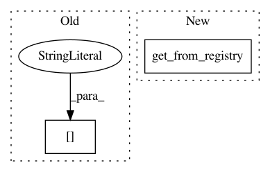

9be4432a7b5e340ce050bb92ab7b41fafb31eb16,ludwig/features/timeseries_feature.py,TimeseriesBaseFeature,get_feature_meta,#Any#Any#,55
Before Change
@staticmethod
def get_feature_meta(column, preprocessing_parameters):
format_function = get_from_registry(
preprocessing_parameters["format"],
format_registry
)
max_length = 0
After Change
@staticmethod
def get_feature_meta(column, preprocessing_parameters):
tokenizer = get_from_registry(
preprocessing_parameters["format"],
tokenizer_registry
)()
max_length = 0
for timeseries in column:
processed_line = tokenizer(timeseries)
max_length = max(max_length, len(processed_line))
In pattern: SUPERPATTERN
Frequency: 3
Non-data size: 2
Instances
Project Name: uber/ludwig
Commit Name: 9be4432a7b5e340ce050bb92ab7b41fafb31eb16
Time: 2019-06-17
Author: 33033675+ydudin3@users.noreply.github.com
File Name: ludwig/features/timeseries_feature.py
Class Name: TimeseriesBaseFeature
Method Name: get_feature_meta
Project Name: uber/ludwig
Commit Name: fcb01e3b18c0b3304c4ff0b1f0b8b4ede518f762
Time: 2020-12-03
Author: jimthompson5802@gmail.com
File Name: ludwig/features/numerical_feature.py
Class Name: NumericalFeatureMixin
Method Name: add_feature_data
Project Name: uber/ludwig
Commit Name: fcb01e3b18c0b3304c4ff0b1f0b8b4ede518f762
Time: 2020-12-03
Author: jimthompson5802@gmail.com
File Name: ludwig/features/numerical_feature.py
Class Name: NumericalFeatureMixin
Method Name: get_feature_meta